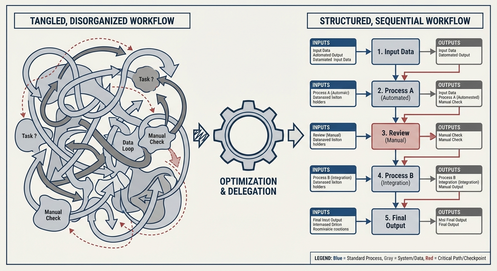
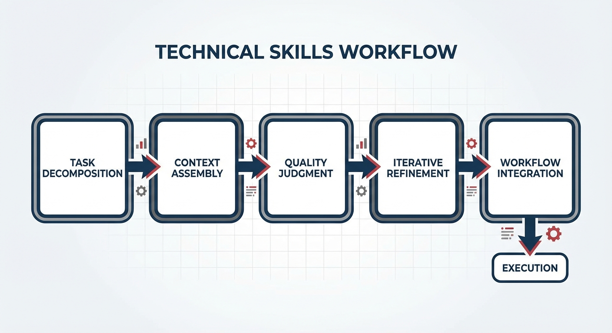
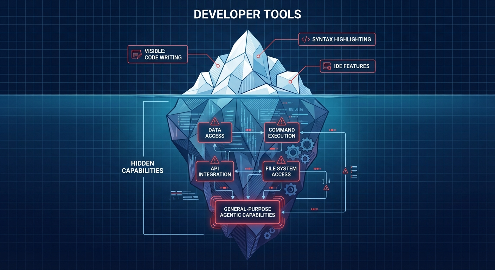
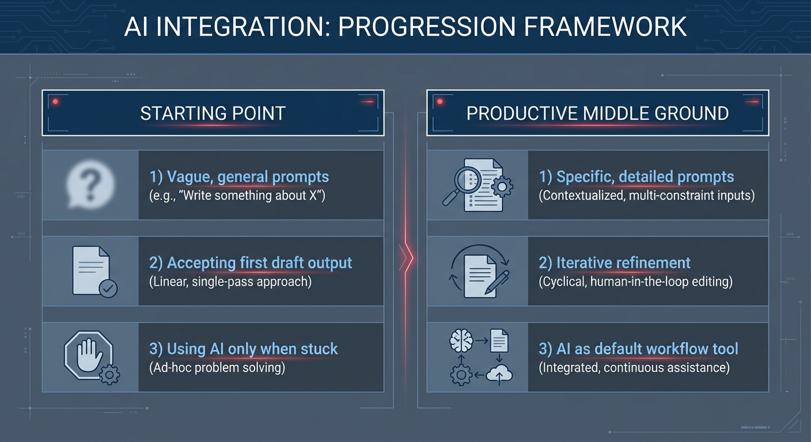

Your AI Tools Aren't Broken—Your Workflow Is
Putting Nate Johnson's "6 Skills" framework into practice—what effective AI collaboration actually looks like in day-to-day knowledge work

I recently watched a video by Nate Johnson (Why Your Best Employees Quit Using AI After 3 Weeks) where he reviewed a Microsoft study that tracked 300,000 employees using AI tools. The findings were striking: initial enthusiasm faded quickly, and within a few months the majority of users had stopped using the tools entirely.
Johnson explores why this pattern repeats across organizations and identifies six skills that distinguish people who get sustained value from AI. The key reframe he offers: working effectively with AI has less to do with learning a new tool and more to do with applying skills we already use when delegating to and managing people.
The video is worth watching in full—he lays out the framework clearly and explains the research behind it. This post is a companion piece: what does implementing these skills actually look like in day-to-day work?
I'll use support case analysis as a concrete example, but the pattern applies to any knowledge work where you're trying to get real value from AI tools.
Where Most People Get Stuck
There's a common progression with AI tools:
The starting point: You type a general request into Gemini—"help me with this report." You get something generic. You try again with more detail. You get something confidently wrong. You decide it's faster to just do it yourself.
At this stage, people either dump entire documents into AI expecting magic, or provide almost no context and hope for the best. Both approaches produce mediocre results.
The productive middle ground: This is where real value lives—and where most training programs never take you. At this level, you understand that AI output quality depends heavily on input quality. You treat first drafts as starting points, not finished products. You've developed a sense for which parts of your work benefit from AI and which parts require your judgment.
Deep technical integration: This is where you're building custom tools, working with APIs, understanding technical constraints. Most people don't need to get here—and that's fine. But the skills you develop in the middle ground transfer to any tool.
The problem is that most people get stuck at the starting point, blame the tools, and never discover what's possible when you approach AI as a collaborator rather than a magic box.
The Six Skills (From Johnson's Framework)

In the video, Johnson identifies six capabilities that distinguish people who get sustained value from AI. I'm summarizing them here, but watch the video for his full explanation and the research context.
Based on my experience implementing these, I'd suggest thinking about them in a specific order—as a sequence for building an effective AI workflow rather than a list of independent skills:
1. Task Decomposition – This has to come first. Before you can delegate anything, you need to understand exactly what you're asking your AI collaborator to do. What are the actual steps involved? What does each step produce? You can't effectively delegate "analyze this case"—you need to break that down into the discrete subtasks that analysis actually involves.
2. Context Assembly – Once you've decomposed the task, you can identify what data each step needs as input and what it should produce as output. This includes intermediate outputs between steps, not just the final deliverable. The decomposition tells you what to do; context assembly figures out what information each step requires.
3. Quality Judgment and Frontier Recognition – These work together. As the domain expert, you know where people new to this task typically make mistakes. You also learn where AI models have known weaknesses (math, precise counting, recent events). This knowledge tells you where to scrutinize output carefully and where AI can handle things reliably.
4. Iterative Refinement – With the above in place, you can review output at each stage and provide specific feedback: what's missing, what context needs to be added, what language needs adjustment. This isn't generic "make it better"—it's informed by your quality judgment about what good output looks like.
5. Workflow Integration – Finally, once you have a working pipeline, you start building it into how you actually work. This is where the occasional experiment becomes a standard process.
What stands out about this list: it's not about prompt syntax or tool features. These are fundamentally about judgment, delegation, and process design—skills most of us already use in other contexts.
The rest of this post focuses primarily on that first step—task decomposition—because it's foundational. Everything else builds on it.
The Key Move: Decomposing Your Expertise
Here's where theory meets practice.
The pattern that seems to separate productive AI users from frustrated ones is straightforward: they've documented what they actually do.
Most of us work on autopilot. We troubleshoot cases, write reports, prepare for meetings—but if someone asked us to explain exactly what we do, step by step, we'd struggle. The expertise is implicit.
Consider support case analysis. "Analyze a case" sounds like one task, but it's actually several:
- Pull the case details and extract the timeline
- Review any diagnostic data—sosreports, must-gathers
- Check for screenshots that might show errors not captured in logs
- Search the knowledge base for related articles
- Search JIRA for known issues
- Review source code and public documentation
- Test hypotheses against the actual data
- Generate the deliverables—customer updates, internal notes, emails
Eight steps. Each with specific inputs. Each with specific data sources. Each with specific outputs.
This decomposition is foundational for effective AI use. Once you can describe exactly what analysis you need and where to get the data, AI stops being a generic assistant and becomes genuinely useful. You're not asking it to figure out how to do your job—you're delegating specific, well-defined subtasks.
The prompts that work aren't clever AI tricks. They're expertise made explicit—the same process that's been running implicitly, now documented in a way that can be followed.
Why Decomposition Matters: The Delegation Problem
When you work with AI—especially agentic tools connected to real data sources—you're essentially delegating to a collaborator who has read every manual and knows every product spec, but has never done your specific job.
Effective delegation requires being able to explain the task. And most of us can't explain tasks we do on autopilot.
This is why task decomposition is the enabling skill. It forces implicit expertise to become explicit. Once it's explicit, delegation becomes possible.
What effective delegation to AI looks like:
- Clear task definition. "Help me with this case" is too vague. "Pull the diagnostic data from the sosreport, run the Insights analysis, and update the hypothesis list with your findings" gives direction. But you can only give that direction if you've mapped out what "analyzing a case" actually means.
- Knowing what to delegate. Some tasks benefit from AI's ability to search broadly and synthesize quickly. Others require institutional memory and relationship context. The decomposition helps you see which is which.
- Built-in iteration. Effective workflows don't assume the first output is final. Each step can explicitly require updating a working document—building refinement into the process rather than hoping for a perfect first draft.
- Defined outputs. Each subtask should produce something concrete: a timeline, a hypothesis list, a draft email. This makes review possible and keeps the work moving forward.
What This Looks Like in Practice
Here's how task decomposition changes AI interaction, using case analysis as the example:
Without decomposition:
"Help me analyze support case 12345678"
AI response: Generic troubleshooting suggestions. Maybe asks clarifying questions. Produces something you could have gotten from a Google search.
With decomposition:
"In the extracts subdirectory, I have saved several files containing the details about support case 12345678. Please review these and generate an incident timeline, detailed problem statement, and a list of potential hypotheses for the underlying cause with short explanations and what information is needed for validation listed with each hypothesis."
AI response: Structured analysis based on actual case data. Specific hypotheses tied to specific evidence. Clear next steps for validation.
The difference isn't better prompting—it's that the request specifies exactly what's needed (timeline, problem statement, hypotheses) and where to find the data (extracts subdirectory). That specificity is only possible after decomposing "analyze a case" into concrete subtasks.
For hypothesis validation, the decomposed approach continues:
"Develop tests to validate/invalidate each hypothesis using the remote diagnostic environment. For each hypothesis, construct a validation command, execute it, and update the hypotheses file with the exact command used, a snippet of the relevant output, and the updated status."
This isn't asking AI to figure out how to validate hypotheses. It's delegating a specific, well-scoped task: run these tests, document the commands, update this file. The structure comes from domain expertise; the execution gets amplified by AI.
Going Further: Connected Tools
Why Data Access Matters
Once a workflow is decomposed, a limitation of web-based AI becomes apparent: the AI can follow the steps, but it can't always access the data.
This matters more than convenience. AI models are eager to be helpful—sometimes too eager. When they have incomplete information, they'll make a best guess at what the missing pieces might be. This is what we call hallucination, and it's one of the primary reasons AI output can be confidently wrong.
The key to reducing hallucinations is making sure the AI has all the data it needs. An AI with complete context produces dramatically better output than one that's guessing to fill in gaps.
Developer Tools That Aren't Just for Developers

Tools like Cursor, Gemini CLI, and Claude Code can help solve the data access problem. They can access files on your system, run commands, and use tools directly—which means they can pull information from available APIs rather than relying on what you paste into a chat window.
Here's the thing: these tools are general-purpose agentic tools disguised as developer tools. Yes, they're marketed to developers and they're excellent for writing code. But the core capability—an AI that can read files, execute commands, and interact with your system—is useful for any knowledge work that involves data. The "developer tool" label undersells what they actually are.
Data Governance and Approved Use
You need to be careful about what information you provide to which cloud-based LLMs. Every organization has (or should have) policies about which tools are approved for use with which types of data—especially when it comes to customer or sensitive information. Know your organization's policies before connecting AI tools to internal data sources.
Rather than connecting AI directly to customer data, I've used tools like Cursor and Claude Code to build utilities that pull data from appropriate internal APIs, which I can then feed to approved AI tools within sanctioned environments. You don't have to build these yourself—feel free to use existing tools like rhcase or ones others have developed.
Finding Your Organization's Boundaries
Right now, these agentic tools are broadly accepted for development work in most organizations, but the boundaries for other use cases are still evolving. If you've done the task decomposition work for your own workflows and see potential for agentic tools beyond coding, I'd encourage you to work with your organization's AI governance team to define and expand what's approved. The more concrete, well-defined examples you can provide of non-coding applications, the faster the policies can evolve to match reality. Your workflow might be the one that opens the door for others.
The Bottom Line on Connected Tools
This path isn't required for productive AI use—the decomposition and delegation skills work with any tool. But for workflows that involve internal data, finding approved ways to get that data to your AI collaborator makes a real difference in output quality.
You Don't Have to Build Anything
Let me be clear about something: you don't need to code to reach the productive middle ground.
The six skills from Johnson's framework—context assembly, quality judgment, task decomposition, iterative refinement, workflow integration, and frontier recognition—are entirely tool-agnostic. You can practice them in Gemini right now, whether you're using it in Google Docs, in the web interface, or elsewhere.
The difference between the starting point and the productive middle ground:

The second approach requires more upfront thought. But it converts "AI doesn't get me" into "AI actually saves me time."
What Connected Tools Enable
For workflows that touch internal data repeatedly, connected AI tools open additional possibilities:
- Preparing for a customer meeting by pulling their recent support cases, product configuration, and account notes automatically
- Building analyses from real internal documents rather than generic web knowledge
- Summarizing activity with a customer based on actual communication history
Tools like Cursor and Claude Code can connect to APIs, databases, and file systems. The result is AI that works with actual context rather than requiring manual copy-paste for every interaction.
This isn't necessary for reaching the productive middle ground, but it removes friction for data-intensive workflows.
Getting Started
The essential first step:
Pick one recurring task. Write down exactly what you do—not the high-level description, but the actual sequence of steps. What data do you need at each step? Where does it come from? What does the output look like?
Then apply the basics:
- Provide context deliberately. Tell AI what you need and where to find relevant information.
- Treat outputs as drafts. Build review and refinement into your process.
- Document what works and what doesn't. AI capabilities vary by task type—learn where the boundaries are for your work.
For those interested in going further:
- Tools like Gemini CLI are less intimidating than they appear
- The decomposition work transfers directly—once you know what data you need, connecting to it becomes a defined problem
- Start with the workflow design; the tooling follows
The Bottom Line
Johnson's framework explains why most people hit a wall with AI and what skills matter for breaking through. This post is about how—what implementation looks like for one specific type of work.
The pattern that works:
- Decompose a recurring task into specific steps with defined inputs and outputs
- Delegate well-scoped subtasks with clear context
- Iterate rather than expecting perfect first drafts
- Verify outputs against the requirements of each step
The starting point is picking one task you do regularly and writing down exactly what that involves. Not "analyze cases" but the eight (or ten, or twelve) discrete steps that analysis actually requires. That documentation is the foundation everything else builds on.
If you haven't watched Johnson's video yet, start there for the framework: Why Your Best Employees Quit Using AI After 3 Weeks. Then come back here when you're ready to implement.
The case analysis workflow referenced in this post is available as a prompt library—not as a finished product, but as an example of what decomposed AI workflows can look like in practice. The workflow uses rhcase, a CLI tool for Red Hat API access (cases, KCS, Jira).
— grimm